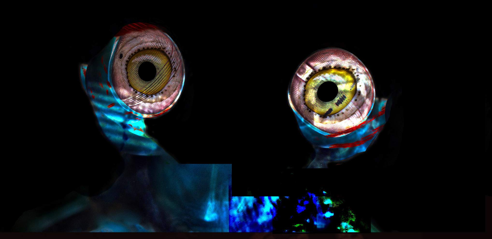
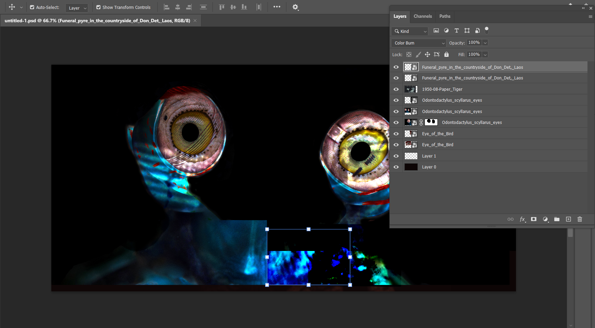

Picture HW #4: Photomontage

Layer panel edition:

The eyes are an illusive part of our world today and with this art piece, I try to delude myself into the art
of “watching” things. Watching people through their day to day life. Watching the birds in the sky as they try
to dive at me eating a blt. Watching a face of fear when the homeless person walks up to another person asking
for a few cents for a nice warm meal from the bodega. To me, however, all these eyes look the same. The same
blend of anger, excitement, sadness; there is no nuance really with those types of looks. The eyes never
lie is something that people say often as, of course, sight are one of the most important senses in
your body, but what do your eyes truly see? Yes, they can see all, but only what you want them to see. You can
see injustice happen in the world around you and turn a blind eye towards it. And yet in your
self consciousness, you want to watch to see if your eyes are as accurate as they are portrayed to be. So you
just try to take a small, little, peek.
I used 4 photos for the photomontage I’ve created. The first 3 carry a somewhat similar theme to each other:
eye actions; specifically an eye where the pupil is agape and one of the core focuses of the photo. The eye
of a bird quite simple in picture really; a close up to the face of the parrot. I used it as the eyes
and for the second eye on the right, I pulled it along the z-axis a little bit so that both eyes would seem to
be looking forward, but also slightly inward towards each other. The more crucial part of this piece would be
Odontodactylus scyllarus eyes. This was the base in which I used the masking tools. The eyes of such a
creature felt empty as if it was looking at nothing yet knowing everything around it at the same time…so I
removed his eyes in place for the parrots' more expressive pupils. I used 3 different versions of this picture
as the layer version of the photo’s eye…neck…thing kept getting ruined as I placed the parrot eyes onto the mask
of the creature. The two other photos were just used to replace the two neck parts, in which I used darken color
at 100% for both. At first I didn't like the overlapping that was happening with the bird and the second set of
creature eyes, but as I kept editing other parts of the photomontage, it portrayed something that added on to
the clashing of what both eyes’ portrayed. The third picture I used was a Paper Tiger which you can see
on the right inside the eye of the bird. To get it inside the eye itself, I increased the image size and used
color dodging at 100% then adjusted the photo so that the eye of the tiger was barely visible at the upper part
of the bird’s eye and the mouth of the tiger was almost enveloping the pupil of the parrot. For the final
photo(a late addition to the photomontage), I used the Funeral pyre in the countryside of Don Det, Laos
for the lower right half of the creature's body. I mostly thought it had no purpose pre-blending since the color
of the pyre was leagues different than the overall tone of what I was aiming for…until I learned of the color
burn feature. It made the color a dark turquoise which matched well with the turquoise that the creature
portrayed on his skin. Not to mention the accidental eye i created in the bottom right through the pyre.